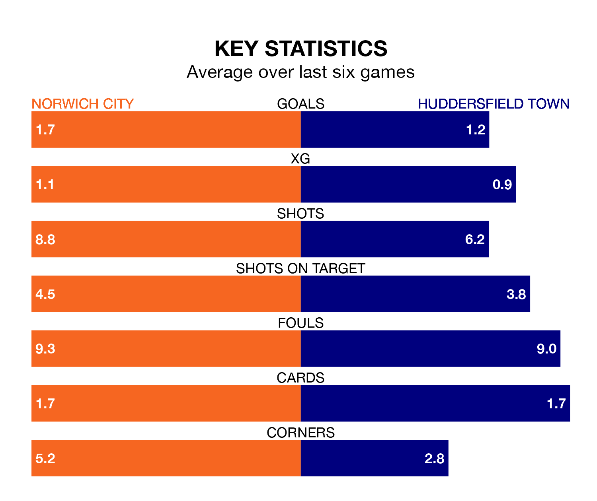

Norwich City are heavy favourites to keep all three points at home in Saturday's kick-off against Huddersfield Town.
The Canaries, who sit 10th in the Championship with 22 games played, are priced at 1.6 to seal victory at Carrow Road.
Sitting 11 places and nine points behind them in the table, Huddersfield are 5.0 to win with *Betting Company*, while the draw is at 3.7.
With 21 goals in 22 games so far this season, Huddersfield are scoring at below the league average rate with 1.0 goals per game. And they are conceding more than average, letting in 36 goals at a rate of 1.6 per game.
Norwich, meanwhile, are above average scorers, with 1.8 goals per game, compared to a league average of 1.4. They have also conceded 1.8 goals per game.
In the last 10 years, Norwich and Huddersfield have played each other on nine occasions. Norwich won five of them, Huddersfield two, and they drew twice.
On average, the Canaries scored 2.6 goals and the Terriers 1.0 in those matches.
Their last meeting was on August 26, when Norwich won 4-0 away.
In Jon Rowe, City have one of the league's sharpest shooters so far this season. He has notched 10 goals in 20 appearances, to sit third in the scoring charts.
Town's top scorers, with five goals each, are Delano Burgzorg and Michal Helik.
The Canaries are in reasonable form in the Championship, with three wins and two draws from their last six games.
With a win and four draws over that period, the Terriers' form is worse – they have taken seven points from 18, compared to the hosts' 11.
Norwich's last match was on December 16, a 2-2 draw against Ipswich Town, with Rowe getting the goals for the Canaries.
Huddersfield drew 1-1 with Millwall last time out, also on December 16, with Burgzorg on the scoresheet.
Updated: 15:16, 21/12/23